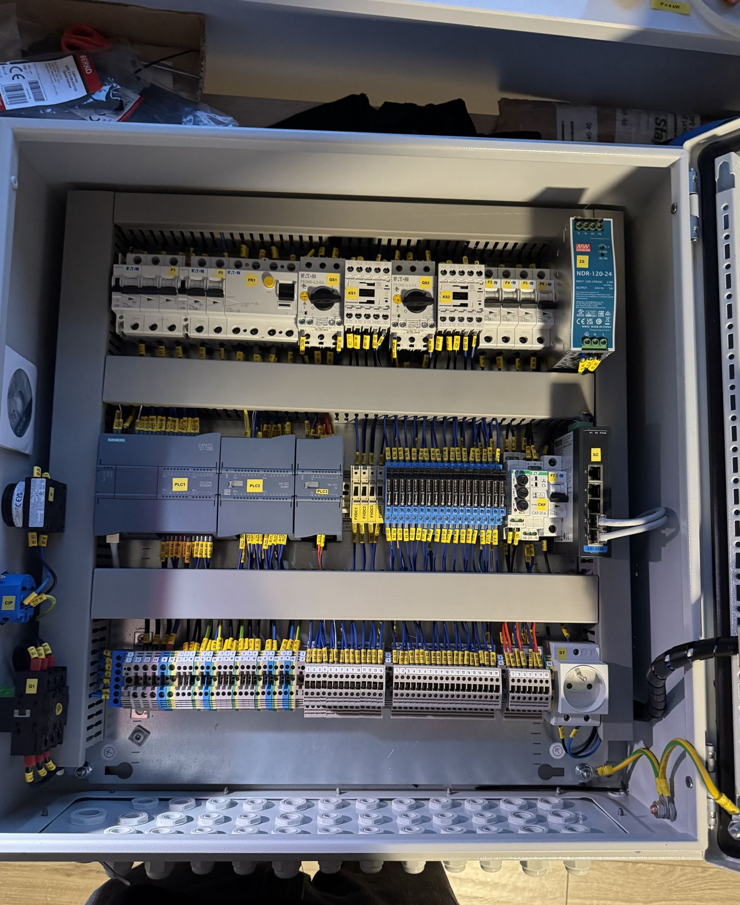

Prefabrykacja płyty montażowej szafy sterowniczej
Kompletna płyta montażowa: zasilanie, zabezpieczenia, styczniki i przekaźniki, listwy zaciskowe. Okablowanie w korytach, przewody opisane zgodnie ze schematem.
Automatyka przemysłowa
Projektujemy, prefabrykujemy i uruchamiamy układy sterowania dla maszyn, linii produkcyjnych i instalacji technologicznych — w branży uzdatniania wody, farmaceutycznej i spożywczej.
Zakres
Bierzemy odpowiedzialność za całość: od doboru aparatury, przez budowę szafy, po program i uruchomienie na obiekcie.
Szafy sterownicze i zasilające budowane w warsztacie, testowane przed wysyłką na obiekt.
Wymiana przestarzałych sterowników i aparatury bez budowy maszyny od nowa.
Integracja falowników, czujników i przetworników z układem sterowania.
Montaż, podłączenie urządzeń polowych, testy funkcjonalne i odbiór.

Dlaczego my
Dobrze zbudowana szafa skraca każdą przyszłą awarię. Dlatego pracujemy według stałego standardu — niezależnie od wielkości projektu.
Realizacje
Kompletna płyta montażowa: zasilanie, zabezpieczenia, styczniki i przekaźniki, listwy zaciskowe. Okablowanie w korytach, przewody opisane zgodnie ze schematem.

Projekt, montaż i uruchomienie szafy sterowniczej z modułami I/O, zasilaniem 24 V DC i zabezpieczeniami obwodów.

Okablowanie szafy wolnostojącej z modułami wejść/wyjść, uporządkowane trasy kablowe i rezerwa miejsca na rozbudowę.
FAQ
Tak. Możemy wykonać prefabrykację na podstawie dostarczonej dokumentacji albo przygotować projekt samodzielnie.
Zależy od wielkości i dostępności aparatury. Termin podajemy w wycenie i trzymamy się go — o ewentualnych zmianach informujemy z wyprzedzeniem.
Tak. Najpierw oceniamy stan maszyny i dokumentacji, a potem proponujemy zakres modernizacji, który ma sens ekonomiczny.
Pozostałe usługi
Opisz krótko zakres — odpowiemy w ciągu 1 dnia roboczego i przygotujemy bezpłatną wycenę.